Overview
홈 서버를 구축하고 운용하는데 있어서 OS선택은 꽤 중요하다고 생각한다. 윈도우를 홈 서버로 운용한다면 컴퓨터를 잘 다루지 못하는 사용자들도 친숙하게 시작할 수 있겠지만 자원관리에 있어서 우니도우는 서버용으로 적합하지 않다. 반면에 리눅스는 무료OS 이며 오래전부터 많은 사람들이 리눅스를 서버로 사용해왔다. 대부분의 유명 툴들도 리눅스 기반으로 시작되었으며 그만큼 자료도 풍부하다.
리눅스 배포판에는 Ubuntu, CentOS, RHEL 등이 있지만 나는 우분투를 주로 사용한다. 우분투는 커뮤니티가 활발하기 때문에 인터넷 상 자료가 풍부하다. 매년 4월과 10월에 새 버전을 배포하는데, 4월에 배포하는 버전은 LTS(Long Term Support)버전이다. 2년 마다 새로운 LTS버전이 배포되고 배포된 LTS버전은 5년 동안 지원된다. 특히 우분투 18.04 LTS는 10년을 지원한다. 참고
우분투는 수 많은 Flavor가 있다. Plain Ubuntu와 관련된 Ubuntu Cloud, Ubuntu Core, Ubuntu Desktop, Ubuntu Server가 있고 고유 UX를 포함한 Kubuntu, Lubuntu, Ubuntu Kylin, Ubuntu MATE, Xubuntu 같은 것들, 그리고 이 외에도 많은데 제일 기본적인 Ubuntu Desktop과 Ubuntu Server를 살펴본다.
서버는 안정적이고 보완성이 강해야되고, 지속적으로 관리하는 것에 초점을 맞추어 있기 때문에 불필요한 요소들을 제거하여 에러의 가능성을 줄인다. 그래서 Ubuntu Server를 설치하면 그래픽-모드가 없고 따라서 오피스, 브라우저, 미디어 플레이어, 게임 같은 불필요한 요소가 설치되지 않는다. 예전에는 서버와 데스크탑이 서로 다른 커널 버전을 썼지만, 지금은 동일하기 때문에 서버와 데스크탑의 큰 차이는 사실 GUI여부와 GUI용 default package들 설치 여부이다. 이 패키지들은 서버를 설치하고 나서 그래픽-모드가 필요하면 그 때 따로 설치하면 된다.
*Ubuntu Desktop 20.04 의 Default Package - https://packages.ubuntu.com/focal/ubuntu-desktop
What’s New in Ubuntu 20.04 Server
One of the biggest improvements brought by Ubuntu Server 20.04 LTS is enhanced security and stability. This comes through the constant security patching process and new features like the Ubuntu Server Live installer, iptables to nftables migration, and more resilient boot loader. Additional features like CIS hardening and Kernel Livepatch service will be available in Ubuntu Pro cloud images for AWS.
인스톨러 다운로드
Ubuntu 20.04 설치는 네트워크과 서비스를 위한 버전으로 텍스트-모드로 설치하기 위해 Ubuntu Server 로 설치할 것이다. 또한 설치 중 설정들이 어느 위치를 참조하고 어떻게 동작하는지 학습하는 것 또한 목표로 하기 때문에 지역, 언어, 네트워크 등 가능한 모든 설정은 설치가 끝난 후 수동으로 설정할 것이다.
Ubuntu Server 20.04 는 두 가지 인스톨러를 지원한다.
- Subiquity Installer (Default, live version)
- Debian Installer (Alternative, legacy version)
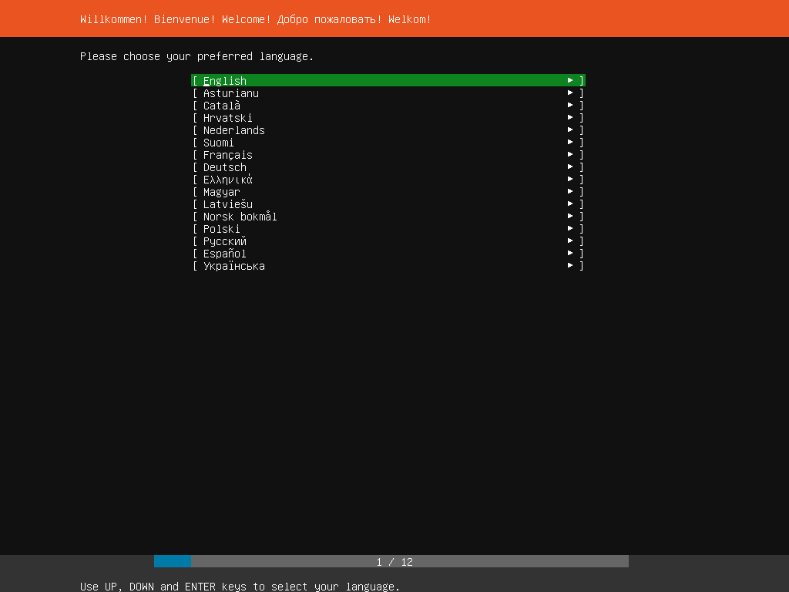 Ubuntu 20.04 LTS Server Live (ubuntu-20.04.1-live-server-amd64.iso)
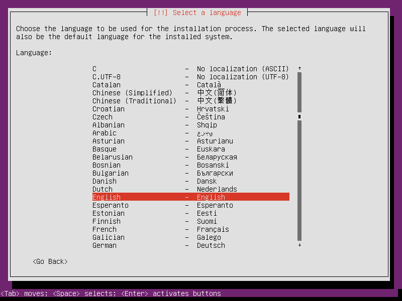 Ubuntu 20.04 LTS Server Legacy (ubuntu-20.04.1-legacy-server-amd64.iso)
Subiquity(live version) 인스톨러는 Ubuntu 18.04부터 새로운 인스톨러로 등장했고 UI가 조금 더 현대적이다. 두 installer의 가장 큰 차이는 cloud-init 패키지 설치 여부이다. Subiquity installer로 설치할 경우 cloud-init이 설치되는데, cloud-init는 우분투 설치 작업을 자동화하는 목적으로 쓰인다. 이 기능은 가령, 서버를 100대 한번에 설치할땐 효율적이겠지만 나한텐 필요없는 기능이다. 그렇기 때문에 나는 Debian Installer(Legacy version)로 우분투를 설치할 것이다.
우분투 다운로드 페이지 에서 Legacy server install image를 다운로드한다
USB 부팅 디스크 만들기
윈도우 : https://rufus.ie/
우분투 : https://tutorials.ubuntu.com/tutorial/tutorial-create-a-usb-stick-on-ubuntu#0
설치 과정
USB를 꽂고 전원을 키면 아래와 우분투 서버를 설치하는 화면이 나온다.

이 페이지가 나오지 않고 부팅된다면 바이오스 설정에서 부팅 순서를 USB로 바꿔주어야 한다.
언어
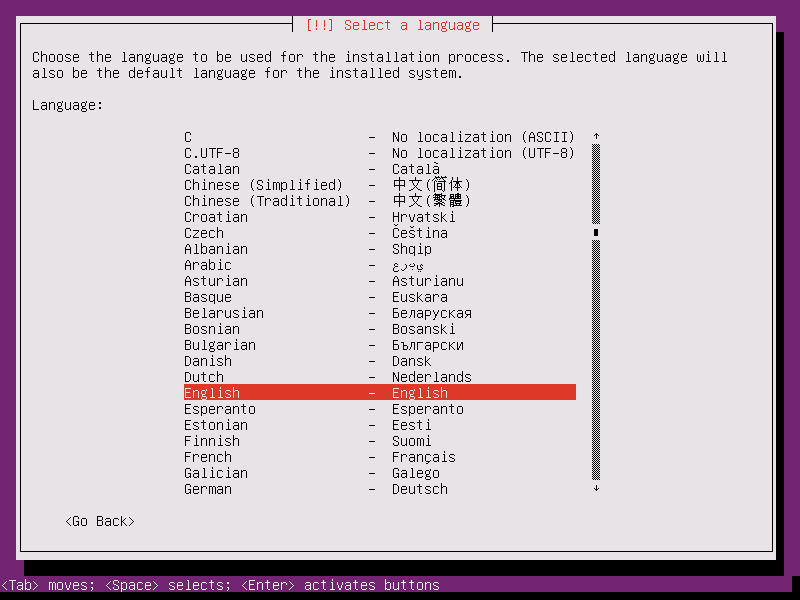 언어는 영어를 선택한다. 한글로 설치할 경우 에러 메세지 또한 한글로 나오는데 구글링 하는데 있어서 오히려 불편하게 느껴진다. 요즘엔 안그러겠지만, 14년도엔 몇몇 툴에서 한글로 설정된 디렉토리를 인식하지 못하는 에러도 있었다.
지역
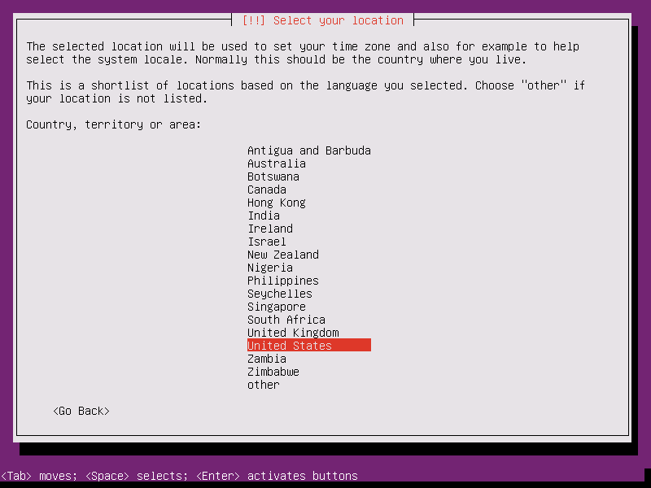 지역 설정은 미국으로 한다. 우분투 소프트웨어들은 각종 패키지들을 모아놓은 아카이브를 통해 다운받을 수 있는데 어느 지역을 선택하느냐에 따라 아카이브 호스트가 결정된다. 우분투의 메인 아카이브의 위치는 http://archive.ubuntu.com/ubuntu 이다. 미국을 선택하면 미국 미러 아카이브 http://us.archive.ubuntu.com/ubuntu 를 사용하게 되고, 한국이나 다른 나라를 선택하게 되면 해당 지역에 맞는 미러 아카이브가 선택된다. 한국에서 한국에 있는 미러 아카이브를 선택하면 속도가 빠르다. 설치 이후 카카오 미러 아카이브로 변경하는 방법을 학습할 것이다.
우분투의 아카이브 미러 리스트는 https://launchpad.net/ubuntu/+archivemirrors 에서 볼 수 있다.
키보드 레이아웃
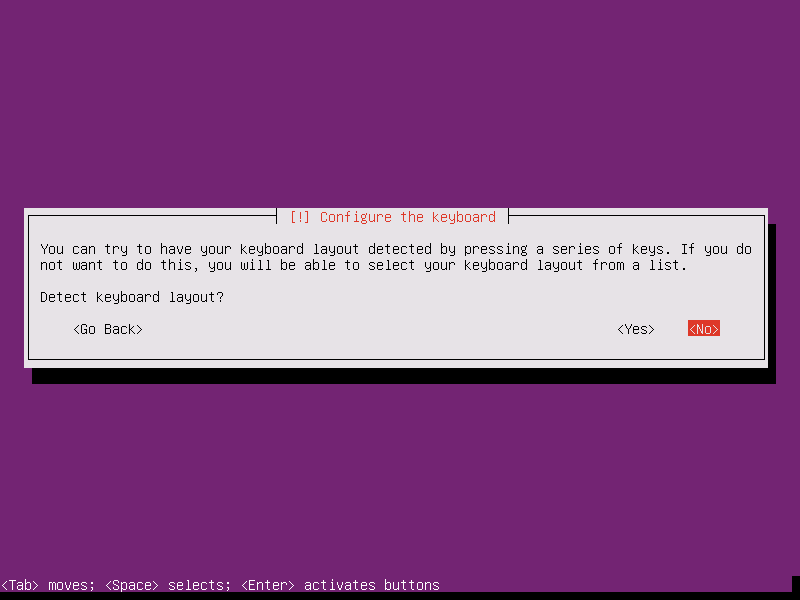 키보드 레이아웃을 자동으로 설정할 것인지 묻는 화면이다. No를 선택하여 수동으로 설정한다.
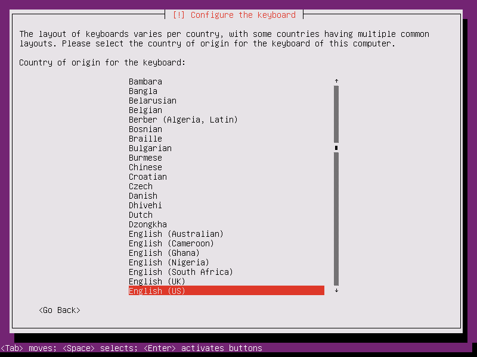 키보드 레이아웃은 국가에 따라 선택할 수 있는 레이아웃이 여러개로 나뉜다. 영어를 선택한다.
Ubuntu Desktop버전에서 한글로 선택할 경우 기본 한글입력기로 ibus가 설치되는데 ibus는 여전히 한글 입력이 안되는 경우가 종종 있다.
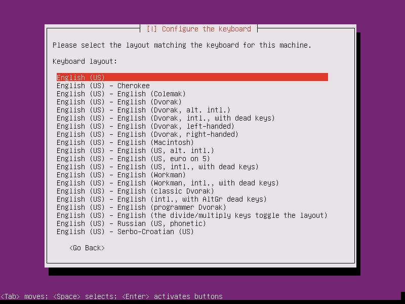 English (US) 를 선택한다.
호스트
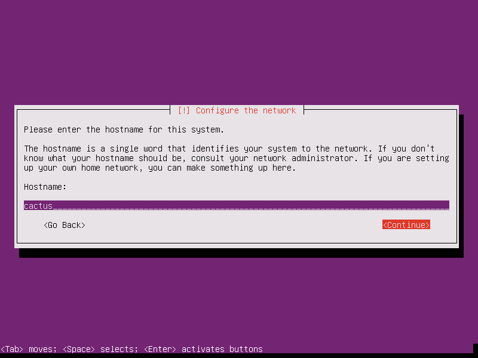 호스트 이름 입력
사용자 계정
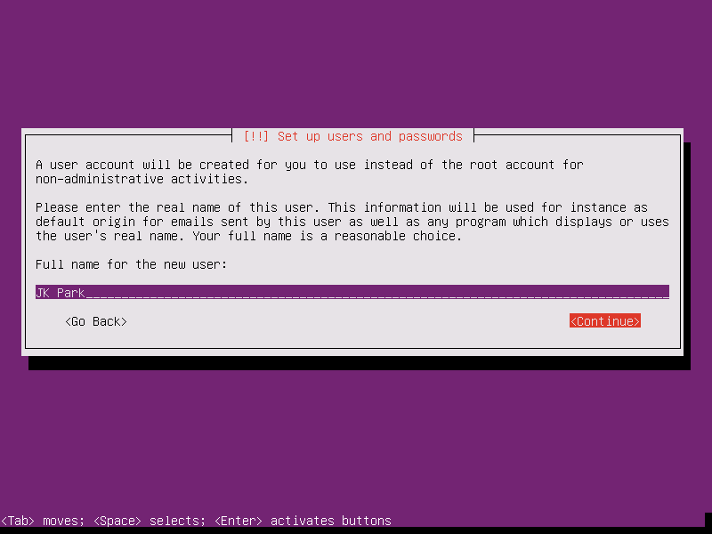 사용자의 실제 이름을 입력하는 창이다. 여러 프로그램에서 친절하게 이 이름으로 불러준다.
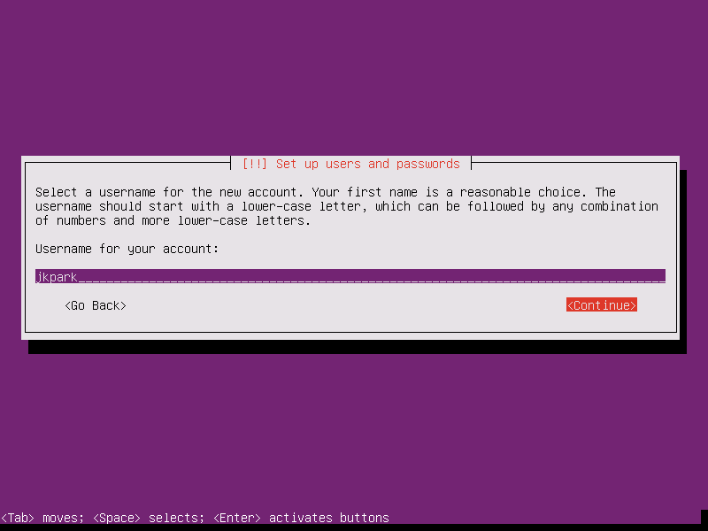 사용자 계정명을 입력한다. 로그인 시 이 계정명으로 로그인하게 된다.
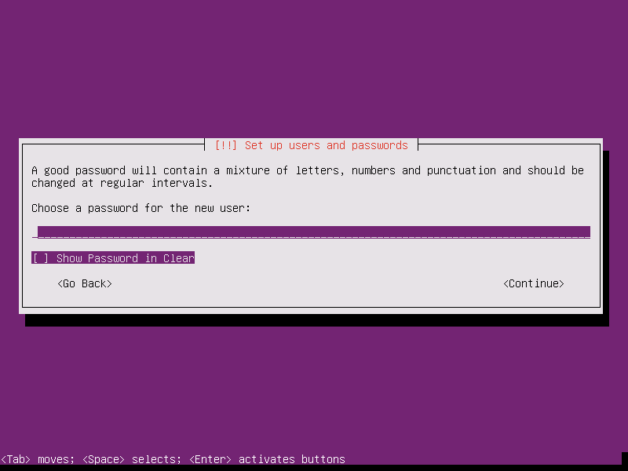 비밀번호를 입력한다.
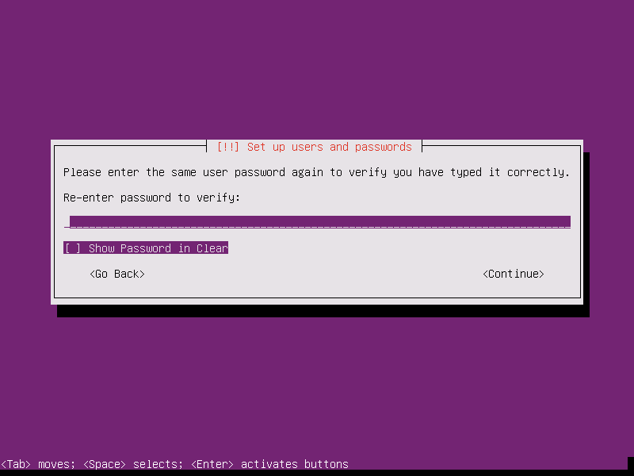 비밀번호를 한 번 더 입력한다.
타임존
이 다음, 네트워크가 연결되어 있다면 자동으로 타임존을 발견하지만 프록시를 사용하거나 네트워크 연결에 문제가 있다면 위와 같이 수동으로 타임존을 선택해야 한다. 설치 후 타임존을 설정할 것이므로 아무거나 선택한다. 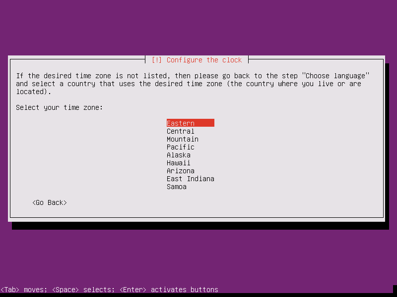
파티션 설정
파티션을 진행하기 위해 기존에 mount된 파티션이 있으면 unmount 해야된다는 메세지가 나온다. yes 클릭

파티션을 설정은 Manual을 눌러 수동으로 설정한다.

사용중이던 디스크의 경우, 나와 같이 이미 사용중인 파티션들이 보일 것이다. 이 파티션들을 모두 지우고 시작한다.


Preview
파티션을 나누기 전, 파티션의 용도를 잘 고려해야한다. 파티션을 알맞게 나누면 파일 정리가 쉬워지고 규모가 큰 서버의 경우에는 /var, /tmp, /home, /usr 등 용도에 따라 디스크와 파티션을 나누어 파일시스템에 충돌이 발생할 경우를 대비한다. 하지만 우리가 구성하는 작은 규모의 홈 서버의 경우 설치하는 프로그램 수, 쌓이는 로그의 수, 유저의 수 등을 고려했을 때 여러 파티션으로 나누는 것은 오히려 디스크를 낭비하는 것일 수 있다. 또한 한 번 정한 파티션의 크기를 줄이고 늘리는 작업은 번거롭다. 그러면서도 한편으론 사고는 불시에 발생하기 때문에 파티션을 적절히 나누어 주는 것이 좋다.
한 가지 더 언급해야 하는 것이 있다. 리눅스에서는 swap이라는 공간을 있다. 리눅스에서는 메모리가 부족할 경우 오랫동안 사용하지 않은 소프트웨어의 메모리를 swap 공간에 잠시 보관시켜 메모리 공간을 확보한다. swap을 설정하지 않았거나 swap 공간 마저 부족하다면 OOM-killer에 의해 어떤 소프트웨어가 죽을지 모른다.
그러나, 시대가 발전하면서 가정에서도 적당한 가격으로 16GB, 32GB RAM을 구성할 수 있게 되어 swap 공간의 필요성에 대해 논쟁을 하고 있다. 나는 사용하는 목적에 따라 swap 공간을 확보하는 것이 바람직하다고 생각한다. 더구나 내 시스템은 8GB RAM 밖에 안되기 때문에 만일을 위해 swap 공간을 확보할 것이다.
10년동안 리눅스를 사용하면서도 파티션 나누는 것이 제일 고민스럽다. 파티션을 나누는 것에 정답이 있는 것도 아니고 추 후 필요에 따라 파티션을 쪼개고 늘리거나, 아니면 2년 후에 또 다음 LTS 버전으로 포맷할 수도 있기 때문에 그냥 적당히 나누면 될 것 같다.
내 시스템에는 128GB SSD와 2TB HDD가 있다.
128GB SSD 에는 swap, /boot와 적당한 크기의 root filesystem를 만들고 나머지 공간은 workspace용도의 btrfs 로 포맷할 것이다.
2TB HDD도 마찬가지로 btrfs로 포맷할 것이다. btrfs 는 스냅샷 지원, 암호화와 압축 가능 등 다양한 장점이 있다. 설정이 다소 복잡하므로 btrfs 포맷 방법을 따로 다루도록 한다.
이 장에서는 root filesystem, swap, /boot 를 만들 것이다. 이 때, 자신의 디스크가 2TB 이상이거나 UEFI모드를 사용한다면 EFI 파티션도 필요하다. 수동모드는 이런 부분까지 고려해야 되기 때문에 잘못 설치하면 부팅이 안되는 일도 종종 발생한다. 사실 나는 ESP모드 이기 때문에 EFI파티션이 필요 없지만, 그럼에도 이 글을 읽는 누군가를 위해 EFI파티션을 설명한다.
EFI 파티션 생성
FREE SPACE에 커서를 두고 엔터를 누르면 옵션이 나온다.
debian installer에서는 EFI파티션을 수동으로 선택하는 옵션이 없다. 대신 automatic partition 옵션을 선택하면 EFI파티션이 잡힌다.

 536.9MB 의 EFI 파티션과 128.3GB 만큼의 ext4 가 잡혔다.
이렇게 해서 EFI파티션가 생겼다면 나머지는 지운다.
536.9MB 의 EFI 파티션과 128.3GB 만큼의 ext4 가 잡혔다.
이렇게 해서 EFI파티션가 생겼다면 나머지는 지운다.

이제 swap, /boot와 적당한 크기의 root filesystem를 만들 것이다.
/boot 파티션 생성
요즘엔 /boot 파티션을 따로 둘 필요까진 없는데 나는 다른 파티션 매니징할 때 불필요하게 /boot까지 조작되는 것이 싫어서 따로 두었다. 참고로 /boot를 나누는 대표적인 이유는 root filesystem 암호화/압축 때문이다.

 1GB 설정. 우분투 help wiki{:target=”_blank”}에 따르면 250MB ~ 1GB로 가이드 한다.
1GB 설정. 우분투 help wiki{:target=”_blank”}에 따르면 250MB ~ 1GB로 가이드 한다.


 마운트 포인트를 /boot로 바꿔준다.
마운트 포인트를 /boot로 바꿔준다.


swap 파티션 생성

 8GB 설정
8GB 설정


 Use as를 swap으로 바꿔준다.
Use as를 swap으로 바꿔준다.


root 파티션 생성

 40GB 설정
40GB 설정


디스크는 보통 4개의 primary파티션으로 나눌 수 있는데 마지막 하나를 확장 시켜 더 많은 파티션을 만들 수 있도록 했다. 그래서 3개의 primary 파티션과 여러개의 logical 파티션으로 구성할 수 있다. 알고 넘어갈만한 차이는 없다.


파티션 설정 완료
 남은 79GB 공간과 2TB의 HDD는 btrfs로 설정할 것이다.
설정방법이 다소 복잡하므로 다른 장에서 설명한다.
남은 79GB 공간과 2TB의 HDD는 btrfs로 설정할 것이다.
설정방법이 다소 복잡하므로 다른 장에서 설명한다.

 Yes를 눌러 파티션 설정을 저장한다.
Yes를 눌러 파티션 설정을 저장한다.
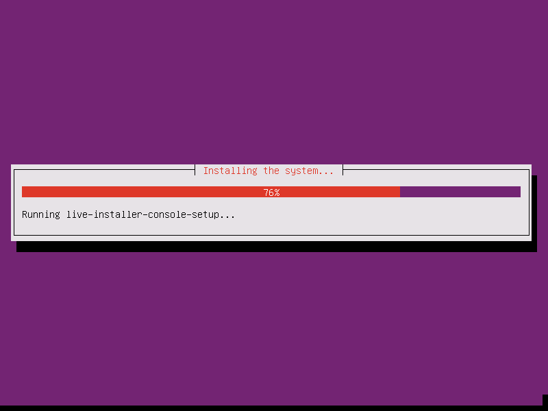 파티션 설정이 끝나면 우분투 서버 설치가 진행된다. 진행되는 도중에도 몇가지 설정을 묻는다.
프록시
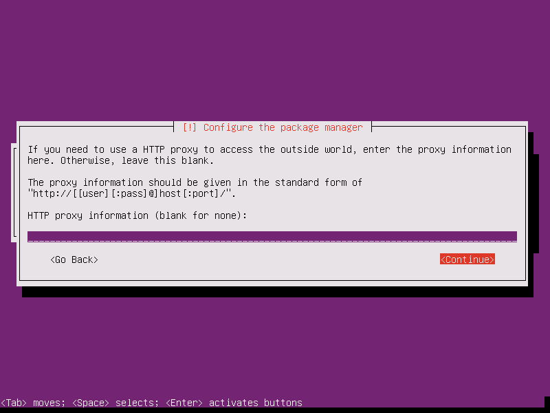 프록시 설정 창이다. 프록시 서버를 사용 중이라면 프록시 주소를 입력한다. 일반적인 경우 쓰이지 않는다.
자동 업데이트
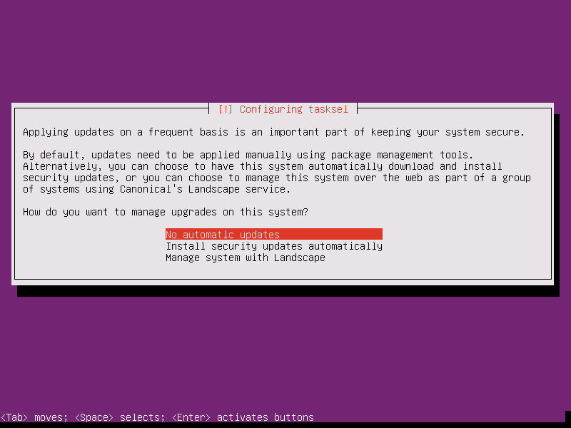
주기적으로 아카이브를 통해 업데이트 받을 수 있다. 설치 후 언제든지 설정가능하므로 원하는 것을 고른다. 나는 수동 업데이트를 원하므로 No automatic updates를 선택하였다.
추가 소프트웨어
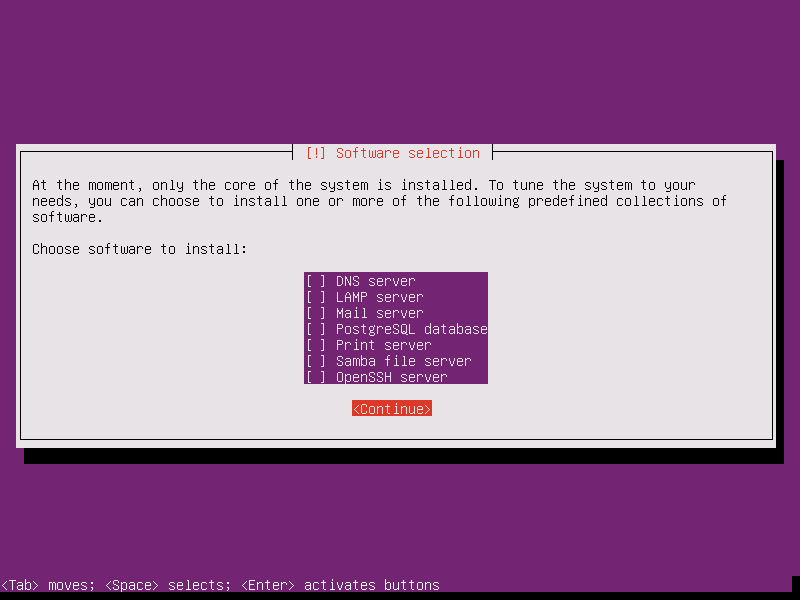
추가 소프트웨어를 선택할 수 있다. 대부분 필요하지 않는 소프트웨어들이다. OpenSSH와 Samba는 추 후 설치 방법을 다룰 것이다.
부트로더
디스크에 boot loader가 없다면 GRUB 부트로더 설치 여부를 묻는다. 부트로더가 없다면 부팅되지 않기 때문에 꼭 설치해야 한다.
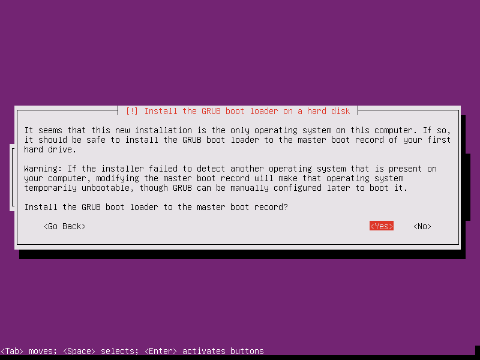

설치 완료
설치가 완료되었다.
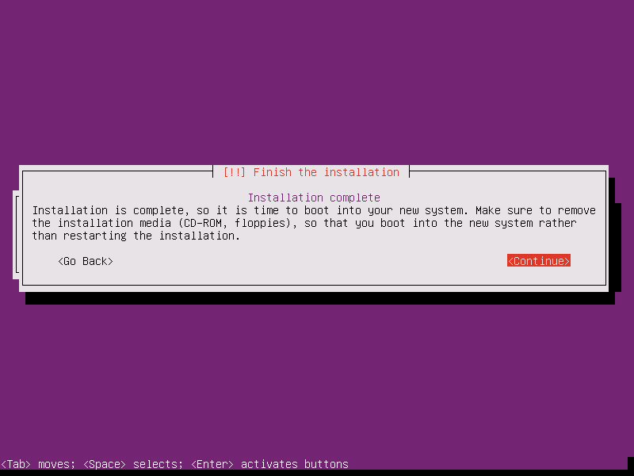
USB를 제거하고 continue를 눌르면 재부팅이 되면서 아래와 같이 로그인 창이 뜰 것이다.
로그인
 계정과 비밀번호를 입력하여 로그인한다.
계정과 비밀번호를 입력하여 로그인한다.

커서가 위치한 jkpark@cactus:~$ 을 살펴보면 다음과 같다.
jkpark: 사용자명cactus: 호스트명~: 디렉토리 위치. 자신이 위치한 디렉토리를 표시한다.~은 사용자의 홈 디렉토리이다.$: 로그인한 사용자가root권한을 갔는다면#이 표시되고 아니라면$이 표시된다.
리눅스의 최상위 사용자는 root이다. 우분투는 기본적으로 root 계정으로 로그인이 불가능하게 설정되어 있다. root권한이 필요한 파일에 접근하기 위해선 일반 사용자가 root 권한을 빌려야 하는데 root 권한을 빌리 수 있는 사용자 그룹을 sudoers라고 한다. 우분투 서버를 설치할 때 생성했던 사용자는 sudoers그룹에 속해있다. root권한이 필요한 작업 수행 시 명령어 맨 앞에 sudo를 입력하여 수행할 수 있다.
예) whoami 명령어는 명령어를 수행하는 사용자가 누구인지 출력해 주는 명령어이다.

$ whoami
jkpark
$ sudo whoami
root
그냥 whoami 명령어를 실행하면 jkpark이 출력되지만, sudo를 붙이면 root가 출력되는 것이 보인다.
내 글에서는 위와 같이 명령어(입력)와 출력을 구분하기 위해
$을 맨 앞에 표시하였다.$ whoami는 ‘whoami’ 명령어를 수행한다는 의미이고$이 붙지 않는다면 출력(결과)이라는 의미이다.